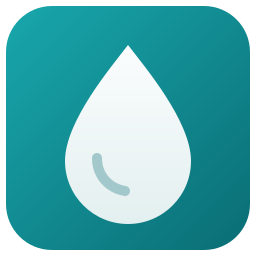
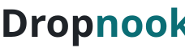
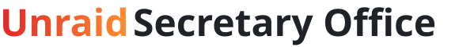
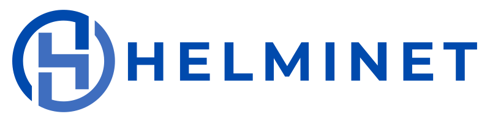

Free & open source
Two helpful tools for your home server
Both run on your own server, need no account and send nothing to a cloud. Take the one you need — or both.
-


Instant sharing for your home network — like AirDrop, but for every device and every system.
- Drop in text, files or a screenshot — it is on every other device at once.
- All in the browser: no app to install, no login, no cloud.
- A Docker container on your own server, in 17 languages.
-

A whole team supports you in running your Unraid server — ten characters, each looking after one part of it.
- Mr. Backupsy backs up on your schedule, encrypted off-site with Kopia too; Mr. Restori brings apps, folders and VMs back and drills it regularly; Ms. Snapshotini keeps the snapshots.
- Ms. Moverelli keeps the pool fast and tidy, Jack Streamer puts ready what plays next in Emby, Jellyfin and Plex.
- The Night Watchman makes his round every five minutes, Ms. Protocolli brings every log into one place, Ms. Dustdevil clears away what nobody uses any more.
- The Team Lead suggests whom to hire, the Consultant installs what’s missing with you — a plugin for Unraid 7.3.2 or newer, behind Unraid’s login, no cloud, no account.
From the neighbourhood
Not by dropnook, but from the same corner.

On helminet.ch you'll find helmi1987's projects, which I support — have a look!
-
babyphone-cam
A baby monitor in the browser for your home network: camera and microphone right in the browser, one Docker container — no app, no cloud, nothing recorded.
-
tapo_snapshot_catcher
Takes snapshots from your Tapo cameras, shared ones too, through the Tapo cloud and uploads the latest image and an archive over SFTP. If something sticks, Gotify tells you.
-
gotify-bark
A Gotify plugin that passes your messages on to Bark on your iPhone. The priority decides whether they arrive quietly or break through as a critical alert — and messages that are too long get shortened instead of lost.
-
firestorm_certwarden
Two scripts for Cert Warden: Let's Encrypt certificates via DNS-01 challenge for domains hosted at FireStorm — issued and renewed without opening a port.
-
firestorm_mikrotik_dyndns
A DynDNS script for MikroTik RouterOS: keeps your domain's A record at FireStorm on the current WAN IP — and only asks the API when something has actually changed.
-
ansible_mikrotik_fullbackup
An Ansible playbook that pulls a full backup from your MikroTik routers: binary backup and rsc export, through a RAM disk instead of the flash.
-
wettertessin_homepage
The weather station at Camping Paradiso in Melano on Lake Lugano: temperature, rain, wind, lake temperature and webcam — in German, Italian, French and English.
-
helminet_webpage
The site behind helminet.ch itself: a collection of own and supported projects, with GitHub sync, logos, visitor stats and a contact form.
-
SoundTouch
PowerShell scripts for SoundTouch speakers — an older project from 2016.